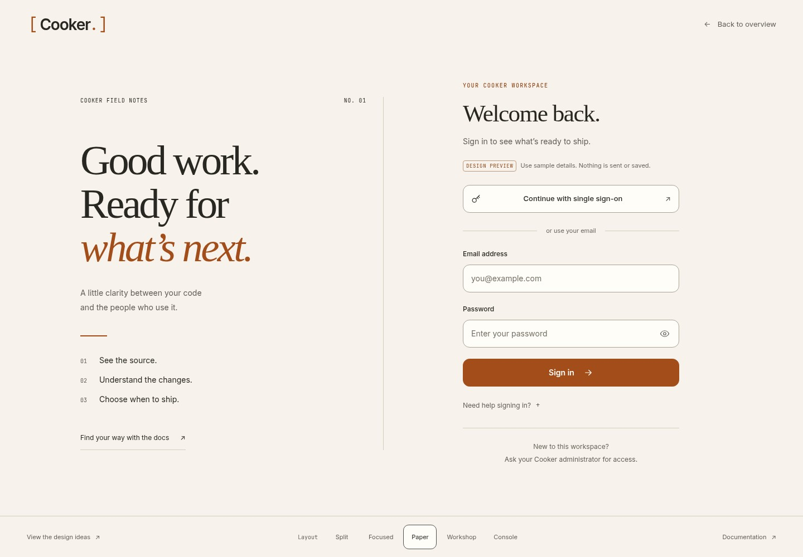
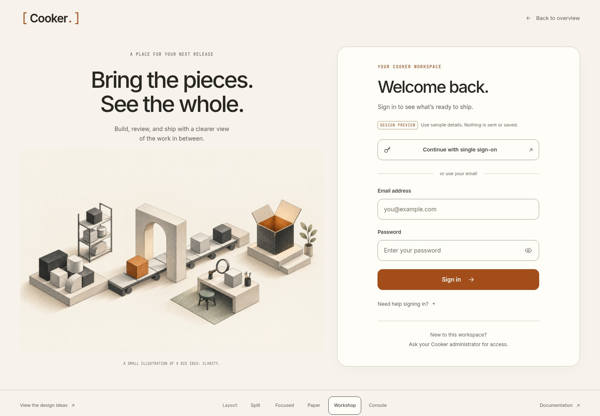
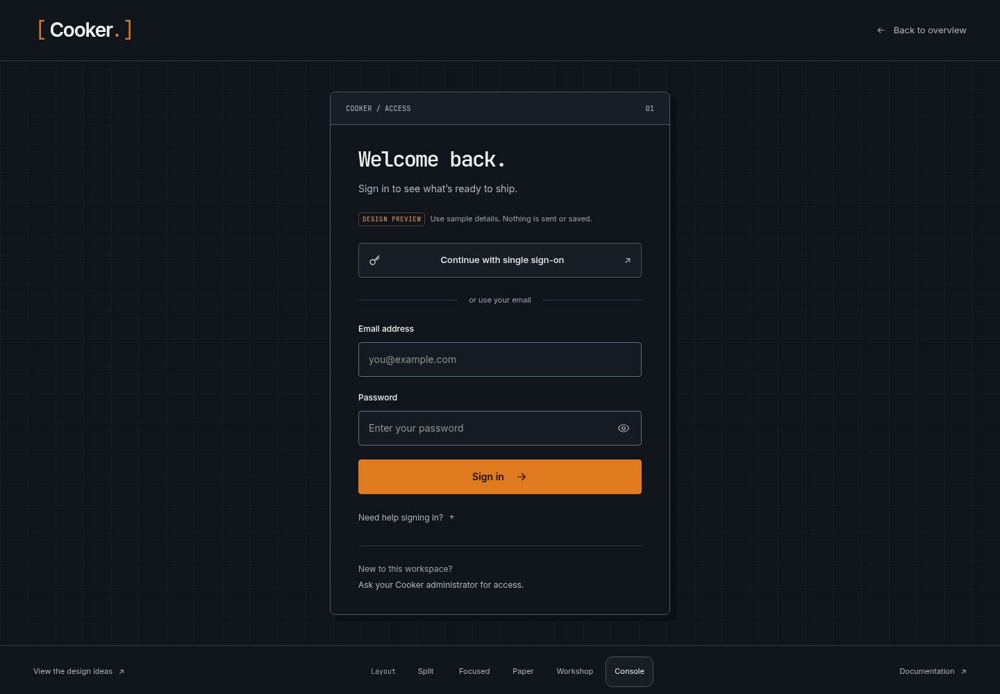
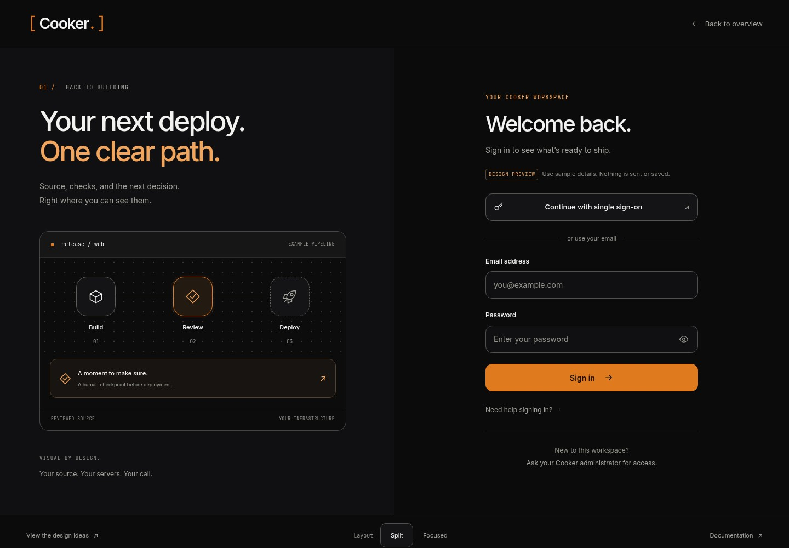
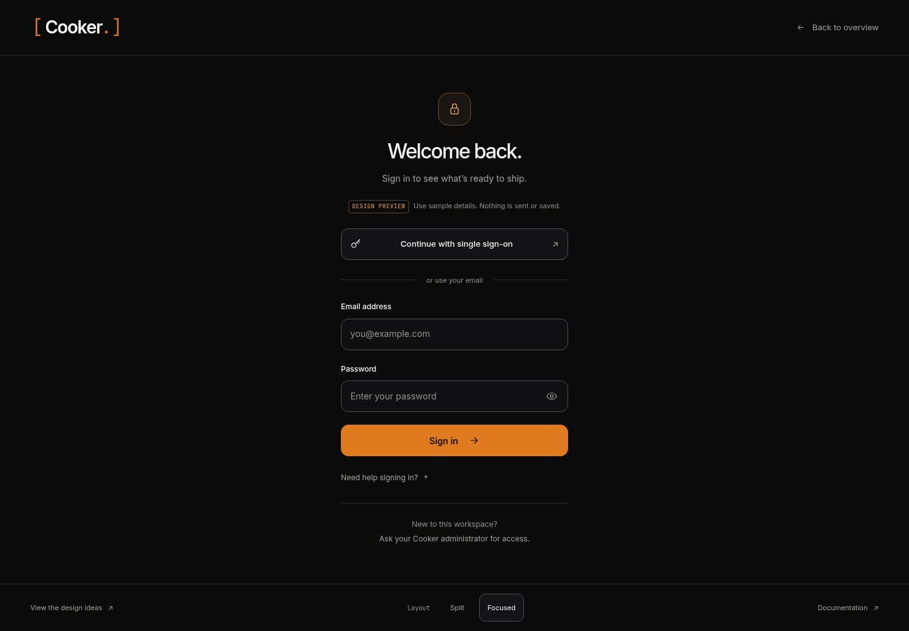

03 / WARM EDITORIAL
Paper & ink
A lighter welcome with a serif headline, field-note details, and a quiet paper surface. A considered direction for mixed technical and everyday audiences.
Try this direction ↗COOKER / LOGIN EXPLORATION
A broader exploration for Cooker: warm editorial, illustrated and inviting, or a compact developer console. Try the new directions, then compare them with the two earlier dark layouts.
THREE NEW DIRECTIONS / DIFFERENT COMPOSITIONS, NOT JUST COLORS

A lighter welcome with a serif headline, field-note details, and a quiet paper surface. A considered direction for mixed technical and everyday audiences.
Try this direction ↗
Original architectural artwork gives the page personality. The form sits in a calm, separate card; on small screens it gets the full stage.
Try this direction ↗
A compact framed entry with monospace accents and precise edges. Familiar to developers, with the same clear labels and help as the other options.
Try this direction ↗A new documentation home for everyday users and developers.
THE EARLIER DIRECTIONS / KEPT FOR COMPARISON

A quiet pipeline illustration carries the landing page’s story into sign-in. The form has its own space, and the illustration steps aside on mobile.
Try this direction
A centered form with a compact lock emblem and very little surrounding content. A useful choice when returning users need the quickest visual route back in.
Try this directionNEW LOGIN REFERENCES / VISUALLY INSPECTED 27 SEP 2026
An expressive illustration gives the sign-in page personality while the form stays clear. Adapted here with original Cooker artwork.
Light surfaces, concise language, and an uncluttered entry. A reference for warmth through restraint.
A restrained developer-facing form, compact hierarchy, and easy access to documentation.
A task-first heading and contextual access help. The pattern informs clearer language, without adding unsupported login methods.
DOCUMENTATION REFERENCES
Task and audience entry points. Adapted as “I use Cooker” and “I set things up.” Visually inspected.
Persistent navigation, a clear reading column, and distinct guide/reference categories. Visually inspected.
Product and task navigation. Reviewed as a text reference for discoverable topics.
Quickstarts and deeper integration reference. Reviewed as a text reference for progressive detail.
REFERENCE NOTES / INSPECTED 27 SEP 2026
A compact centered entry, generous empty space, and clearly ordered sign-in choices.
A clear email-first hierarchy, stacked alternatives, and a minimal surrounding page.
A recognizable product frame with one prominent entry method and a quieter email alternative.
A divided composition that keeps access controls distinct from supporting product context.
These are interactive design previews. Email validation, password visibility, layout switching, and help disclosure work locally. Authentication is not connected, and no credentials are sent or saved. Cooker’s application currently supports local accounts and configurable OIDC single sign-on; provider availability and account creation must follow the server configuration when integrated.